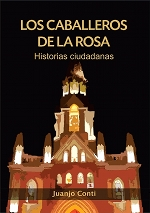

Me divierto escribiendo e intentado que esos escritos lleguen al mundo físico en forma de libros.
| Título: La máquina de los cuentos y otras ficciones (Cuentos) Año: 2010 Editorial: La gota Agotado |
| Título: Los caballeros de la Rosa, Historias ciudadanas (Cuentos) Año: 2012 Editorial: Estelar Comprar |
| Título: Xolopes (Novela) Año: 2014 Editorial: Automágica Comprar |
| Título: Santa Furia (Cuentos) Año: 2014 Editorial: La Gota Comprar |